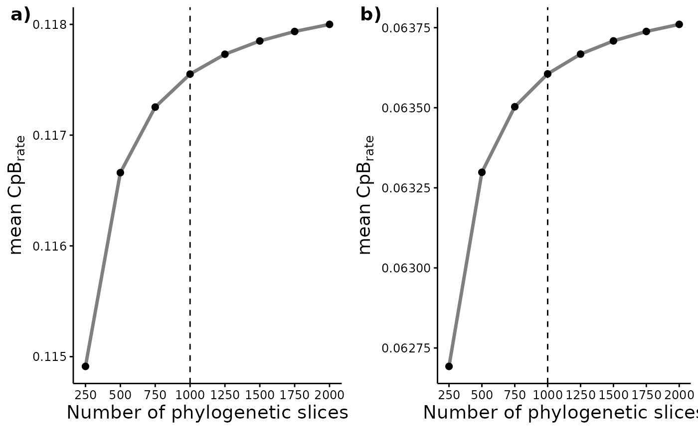
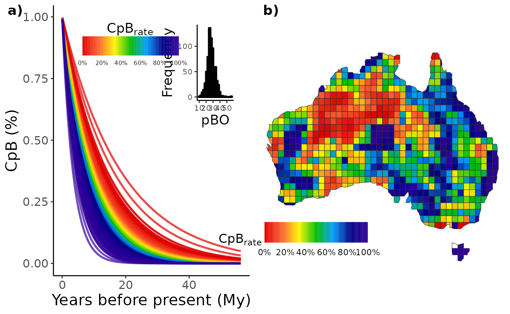
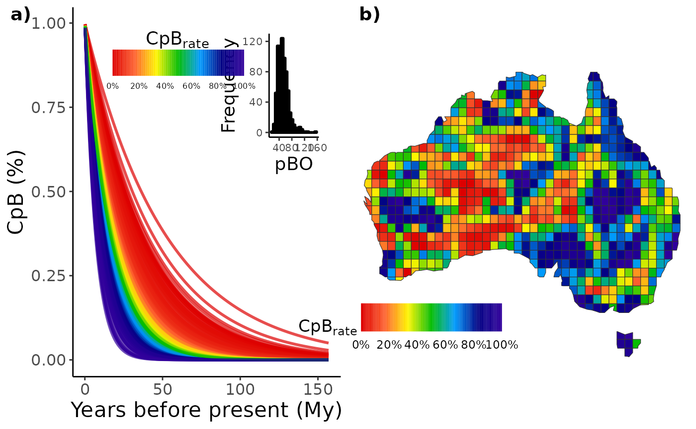

Passeriformes diversification
Source:vignettes/articles/Passeriformes-diversification.Rmd
Passeriformes-diversification.RmdThis article aims to…
First of all, to run the analysis within this vignette we’ll need to
load the treesliceR, ape and
ggplot2 packages.
libs <- c("ape", "ggplot2", "ggpubr")
if (!requireNamespace(libs, quietly = TRUE)){
install.packages(libs)
}
library(ape)
library(ggplot2)
library(ggpubr)
#>
#> Attaching package: 'ggpubr'
#> The following object is masked from 'package:ape':
#>
#> rotate
libs <- c("treesliceR")
if (!requireNamespace(libs, quietly = TRUE)){
devtools::install_github("AraujoMat/treesliceR")
}
#devtools::install_github("AraujoMat/treesliceR") # If it isn't installed within your PC
library(treesliceR)Case study using a single passeriformes tree
First framework example
Herein, we’ll compare the passeriformes Diversification Rates (DR) before and after Australia aridification (~33 Mya). Primarily, we need to load the passeriformes phylogeny that are available within the package. The passeriformes phylogeny was obtained from Jetz et al. (2012).
tree <- pass_trees[[1]]Now, we need to split the phylogeny into two distinct portions, one
representing the last 33 millions of years ago and another the
cladogenesis events before this period. To capture the root slice before
33 My, we can slice our phylogeny tipwardly (i.e., from tips to root)
using the squeeze_tips() function. Alternatively, the tip
slice of the last 33 My can be obtained through the
squeeze_root() function, which slice a phylogeny rootwardly
(i.e, from root to tips).
Since tip diversification rates (DR) calculation are dependent on the
node path to a given tip, we will used the argument
dropNodes = TRUE to remove those void nodes that could bias
our estimation. :
recent <- squeeze_root(tree = tree, time = 33, dropNodes = T)
old <- squeeze_tips(tree = tree, time = 33, dropNodes = T)We can visualize our outputted to see if our algorithm worked
par(mfrow = c(1, 3))
plot(tree, main = "Complete tree", show.tip.label = F); axisPhylo()
plot(recent, main = "Recent tree", show.tip.label = F); axisPhylo()
plot(old, main = "Old tree", show.tip.label = F); axisPhylo()Then, we need to calculate the tip diversification rates (DR)
separately for each phylogeny slice, while finding their difference. To
calculate the DR, we can use the function DR() available
within the treesliceR package:
Now we’ll pair the differences in DR by assigning their difference to a data.frame that contains our passeriformes information inside our tree object:
tree$Species_info$DR_diff <- DR_diffTo calculate the mean and standard deviation difference per
passeriformes family, we use the tapply() function to
aggregate the tip-DR’s by family:
fam_DR <- tapply(tree$Species_info$DR_diff, tree$Species_info$Family, mean)
fam_DR_sd <- tapply(tree$Species_info$DR_diff, tree$Species_info$Family, sd)To visualize the differences in DR among families, lets create a dataframe contaning our outputs:
fam_df <- data.frame(Family = names(fam_DR), DR_diff = fam_DR, DR_sd = fam_DR_sd)
# Sorting based on DR value to plot
fam_df <- fam_df[order(fam_df$DR_diff),]
fam_df$Family <- factor(fam_df$Family, levels = fam_df$Family)Now, we can create a graph similar to the manuscript using the
package ggplot2:
ggplot(fam_df, aes(x = Family, y = DR_diff,
ymin = DR_diff - DR_sd,
ymax = DR_diff + DR_sd)) +
geom_pointrange(color = "#d90429") +
geom_hline(yintercept = 0, linetype="dashed", color = "black") +
coord_flip() + theme_minimal() +
theme(axis.title = element_text(size = 13),
axis.text = element_text(size = 10),
axis.line = element_line(colour = "black"),
panel.grid.major.x = element_blank(),
panel.grid.minor.x = element_blank()) +
ylab(expression(paste(DR["recent"]-DR["past"]))) + xlab(NULL)
#> Warning: Removed 9 rows containing missing values (`geom_segment()`).
Pay attention that the final outputs could be sligly different from those obtained on the Araujo et al. (in review) manuscript. However, in contrast to the study, this example was executed only for a single passeriformes phylogeny. A more complete assessment using all phylogenies could be executed in the sections below.
Second framework example
Herein, we’ll use the Australian passeriformes to calculate the
CpB-rate for both turnover and nestedness components. Firstly, we’ll
need to load the paired assemblages with their respective neighborhoods
to run the analysis which is stored in an intern object called
pass_asb. This object is a list of presence-absences
matrices, where each lists contain a given Australian focal cell and its
respective neighborhood cells. So, let’s check the header of the four
first columns of the first matrix within the list:
head(pass_asb[[1]][, 1:4])
#> Myzomela_obscura Dicaeum_hirundinaceum Hirundo_nigricans Artamus_personatus
#> 6 1 1 1 1
#> 5 1 1 1 1
#> 7 1 1 1 1
#> 16 1 1 1 1
#> 17 1 1 1 1
#> 18 1 1 1 1We can run some sensitivity analysis to find the most parsimonious number of slices to assess the CpB rate patterns. But first, we’ll need to create an vector of number of slices:
vec <- c(250, 500, 750, 1000, 1250, 1500, 1750, 2000)Now we can run the sensitivity analysis and visualize its patterns. We’ll do only for turnover in order to :
sens_turn <- CpR_sensitivity(tree = tree, vec = vec, samp = 100,
asb = pass_asb, rate = "CpB", comp = "turnover")
#> > The 250 number of pieces inputted equals to intervals of 0.2610503391684 million of years.
#> > The 500 number of pieces inputted equals to intervals of 0.1305251695842 million of years.
#> > The 750 number of pieces inputted equals to intervals of 0.0870167797228 million of years.
#> > The 1000 number of pieces inputted equals to intervals of 0.0652625847921 million of years.
#> > The 1250 number of pieces inputted equals to intervals of 0.05221006783368 million of years.
#> > The 1500 number of pieces inputted equals to intervals of 0.0435083898614 million of years.
#> > The 1750 number of pieces inputted equals to intervals of 0.0372929055954857 million of years.
#> > The 2000 number of pieces inputted equals to intervals of 0.03263129239605 million of years.Now we can run the sensitivity analysis and visualize its patterns. We’ll do only for turnover in order to :
sens_turn <- CpR_sensitivity(tree = tree, vec = vec, samp = 100,
asb = pass_asb, rate = "CpB", comp = "turnover")
#> > The 250 number of pieces inputted equals to intervals of 0.2610503391684 million of years.
#> > The 500 number of pieces inputted equals to intervals of 0.1305251695842 million of years.
#> > The 750 number of pieces inputted equals to intervals of 0.0870167797228 million of years.
#> > The 1000 number of pieces inputted equals to intervals of 0.0652625847921 million of years.
#> > The 1250 number of pieces inputted equals to intervals of 0.05221006783368 million of years.
#> > The 1500 number of pieces inputted equals to intervals of 0.0435083898614 million of years.
#> > The 1750 number of pieces inputted equals to intervals of 0.0372929055954857 million of years.
#> > The 2000 number of pieces inputted equals to intervals of 0.03263129239605 million of years.
sens_nest <- CpR_sensitivity(tree = tree, vec = vec, samp = 100,
asb = pass_asb, rate = "CpB", comp = "nestedness")
#> > The 250 number of pieces inputted equals to intervals of 0.2610503391684 million of years.
#> > The 500 number of pieces inputted equals to intervals of 0.1305251695842 million of years.
#> > The 750 number of pieces inputted equals to intervals of 0.0870167797228 million of years.
#> > The 1000 number of pieces inputted equals to intervals of 0.0652625847921 million of years.
#> > The 1250 number of pieces inputted equals to intervals of 0.05221006783368 million of years.
#> > The 1500 number of pieces inputted equals to intervals of 0.0435083898614 million of years.
#> > The 1750 number of pieces inputted equals to intervals of 0.0372929055954857 million of years.
#> > The 2000 number of pieces inputted equals to intervals of 0.03263129239605 million of years.So, we can plot our sensitivity analysis for both components using
the CpR_sensitivity_plot funcion. We use the ggplot syntaxe
to add a vertical line showing our number of slices set for our
following analysis:
# Store each graph within a respective object
turn_sens_plot <- CpR_sensitivity_plot(sens_turn, rate = "CpB", stc = "mean") +
geom_vline(xintercept = 1000, linetype="dashed", color = "black")
nest_sens_plot <- CpR_sensitivity_plot(sens_nest, rate = "CpB", stc = "mean") +
geom_vline(xintercept = 1000, linetype="dashed", color = "black")
# To plot them together
ggarrange(turn_sens_plot, nest_sens_plot,
labels = c("a)", "b)"), ncol = 2, nrow = 1)
Calculating the CpB-rate from the turnover and nestedness components under a multisite approach (PS: this can take some minutes):
# For turnover component
turn <- CpB(tree = tree, n = 1000, asb = pass_asb, comp = "turnover")
#> > The 1000 number of pieces inputted equals to intervals of 0.0652625847921 million of years.
# For nestedness component
nest <- CpB(tree = tree, n = 1000, asb = pass_asb, comp = "nestedness")
#> > The 1000 number of pieces inputted equals to intervals of 0.0652625847921 million of years.Finally, we can plot these CpB through time or map it. To map it, we
can use our intern AU_grid object that represents the
Australian grid map. Let’s do it first for the turnover component:

And we can do the same for the nestedness component:
nest1 <- CpR_graph(data = nest, rate = "CpB", qtl = TRUE)
nest2 <- CpR_graph(data = nest, rate = "CpB", qtl = TRUE, map = AU_grid)
# To plot them together
ggarrange(nest1, nest2,
labels = c("a)", "b)"), ncol = 2, nrow = 1)